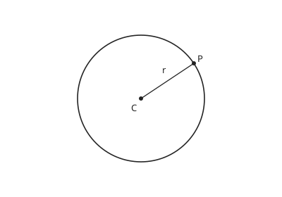

<script>if(location.hostname.endsWith('onrender.com'))location.replace('https://math-sandbox.pages.dev'+location.pathname+location.search+location.hash)</script>
<section class="theory" data-section="P1-3.4">
<h2>3.4 The equation of a circle</h2>
<p class="src">Based on Cambridge International AS &amp; A Level Mathematics: Pure Mathematics 1 Coursebook, Chapter 3, printed pp.82–88 (the equation of a circle). Printed pages were read from P1.pdf (printed 82–88 = PDF 94–100). Own wording and new numbers. Teaching covers Key points 3.6 and 3.7: the completed-square equation, and the expanded form from which the centre and radius are recovered by completing the square.</p>
<p class="key-words"><strong>Key words:</strong> <em>equation of a circle</em></p>
<p>A circle with centre \((a, b)\) and radius \(r\) has <strong>equation of a circle</strong>
\((x-a)^2+(y-b)^2=r^2\).</p>
<figure>

<figcaption>Every point \(P(x, y)\) on the circle is at distance \(r\) from the centre \(C(a, b)\).</figcaption>
</figure>
<p>This is the completed-square form (Key point 3.6). Expanding gives a general form \(x^2+y^2+2gx+2fy+c=0\) (Key point 3.7). The centre and radius in that form should be found by completing the square, rather than by memorising a formula for them.</p>
<div class="worked-example"><h4>Worked example 1</h4>
<p class="src">Book: Key point 3.6, printed pp.82–88. New integer numbers.</p>
<p>Write down the equation of the circle with centre \((2, -1)\) and radius 5.</p>
<ol class="steps">
<li>\((x-2)^2+(y+1)^2=25\). <span class="mark">A1</span></li>
</ol></div>
<div class="worked-example"><h4>Worked example 2</h4>
<p class="src">Book: completing the square, printed pp.82–88. New integer numbers.</p>
<p>The equation of a circle is \(x^2+y^2-6x+4y-12=0\). Find the radius of the circle.</p>
<ol class="steps">
<li>\((x-3)^2+(y+2)^2=12+9+4=25\), so the radius is \(5\). <span class="mark">A1</span></li>
</ol></div>
<h3>Common mistakes</h3><ul>
<li>Using \((x+a)^2+(y+b)^2=r^2\) for a centre \((a, b)\), which has the signs the wrong way around.</li>
<li>Forgetting to move the constant when completing the square, or taking the radius to be \(r^2\).</li>
</ul>
<div class="quick-check" data-q="QC1">
<h4>Quick check 1</h4>
<p>Write down the value of \(r^2\) for the circle with centre \((2, -1)\) and radius 5.</p>
<details><summary>Show answer</summary>
<ol class="steps">
<li>\(r^2=25\). <span class="mark">A1</span></li>
</ol>
<p class="final">\(25\)</p>
</details>
</div>
<div class="quick-check" data-q="QC2">
<h4>Quick check 2</h4>
<p>The equation of a circle is \(x^2+y^2-6x+4y-12=0\). Find the radius of the circle.</p>
<details><summary>Show answer</summary>
<ol class="steps">
<li>\((x-3)^2+(y+2)^2=25\), so the radius is \(5\). <span class="mark">A1</span></li>
</ol>
<p class="final">\(5\)</p>
</details>
</div>
<div class="quick-check" data-q="QC3">
<h4>Quick check 3</h4>
<p>A circle has centre \((0, 0)\) and passes through the point \((6, 8)\). Find the radius of the circle.</p>
<details><summary>Show answer</summary>
<ol class="steps">
<li>\(r^2=6^2+8^2=100\), so the radius is \(10\). <span class="mark">A1</span></li>
</ol>
<p class="final">\(10\)</p>
</details>
</div>
<h3>Past paper</h3>
<p class="src">9709/12/O/N/20 Question 9(a) only, 3 marks. Official QP and official MS. Part (b) (a tangent) belongs later and is omitted. The question number was checked against the official QP.</p>
<p>A circle has centre at the point <em>B</em> (5, 1). The point <em>A</em> (&minus;1, &minus;2) lies on the circle.</p>
<p>(a) Find the equation of the circle. [3]</p>
<details><summary>Show official scheme</summary>
<ol class="steps">
<li>\(r^2=45\), or \(r=\sqrt{6^2+3^2}\). Official MS: B1 (sight of \(r=6.7\) implies B1). <span class="mark">B1</span></li>
<li>\((x-5)^2+(y-1)^2=r^2\) or an equivalent expanded form, using the given centre and their radius. Official MS: M1. <span class="mark">M1</span></li>
<li>\((x-5)^2+(y-1)^2=45\), or \(x^2-10x+y^2-2y=19\). Official MS: A1. <span class="mark">A1</span></li>
</ol></details>
</section>
